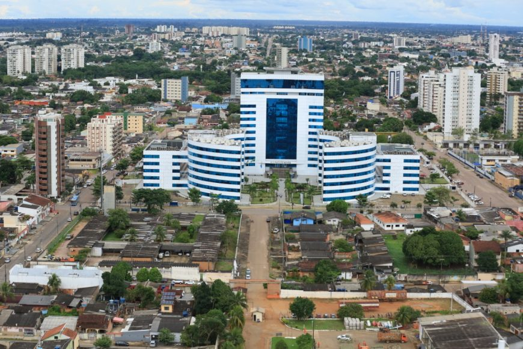

Rondônia é um estado localizado na região Norte do Brasil, conhecido por suas florestas, rios e biodiversidade. Sua capital é Porto Velho, que desempenha um papel importante na economia e na cultura da região. A economia de Rondônia é baseada na agropecuária, na mineração e na exploração de recursos naturais. O governador de Rondônia atualmente é Marcos Rocha, que tem se dedicado a promover o desenvolvimento sustentável, a infraestrutura e a segurança no estado.
